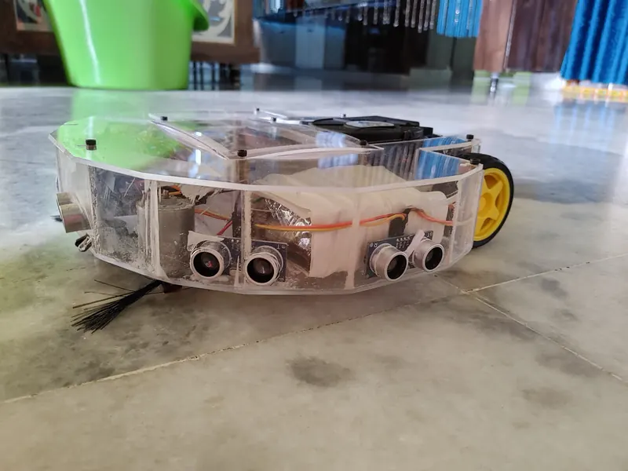
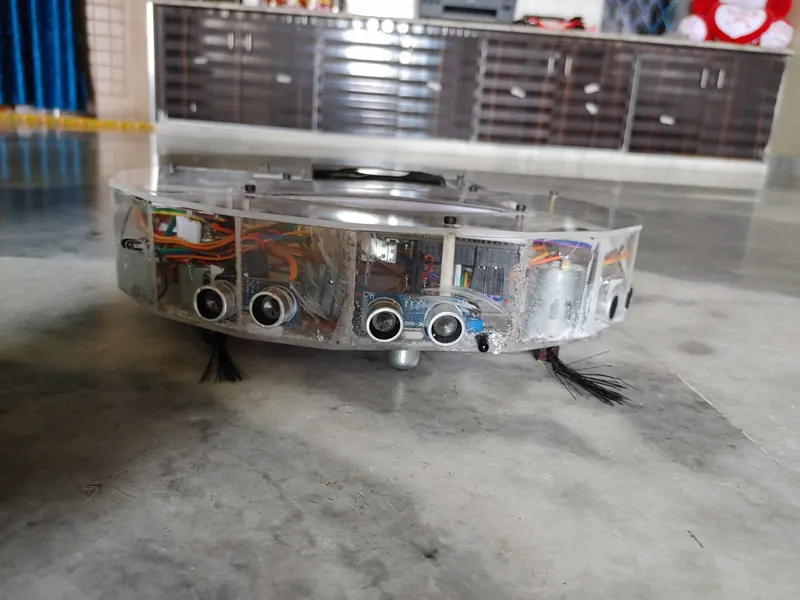
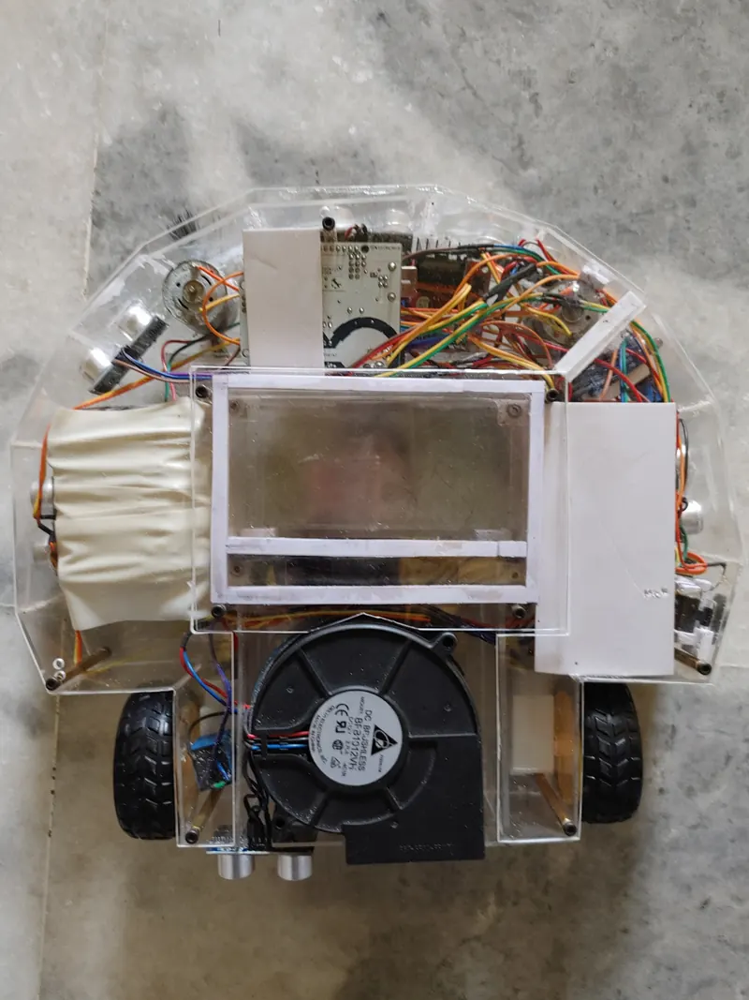
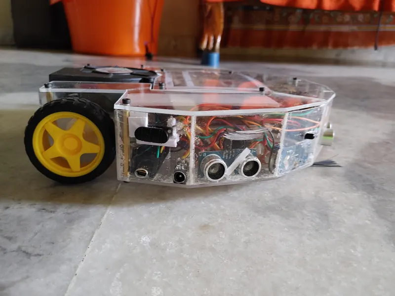
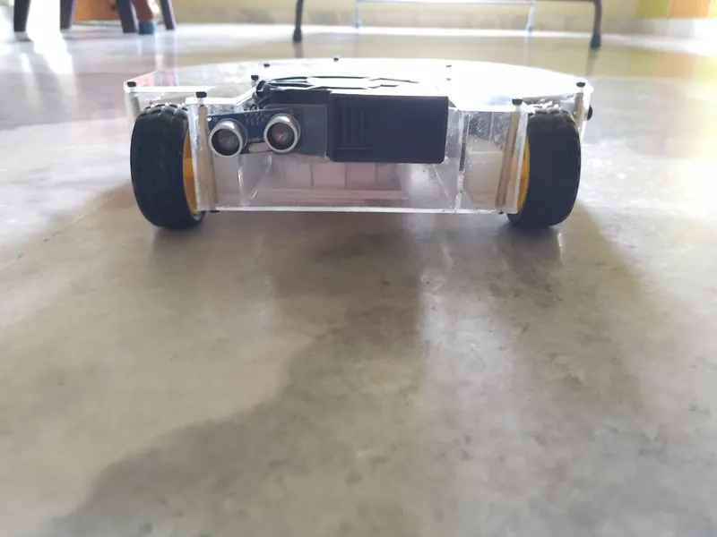
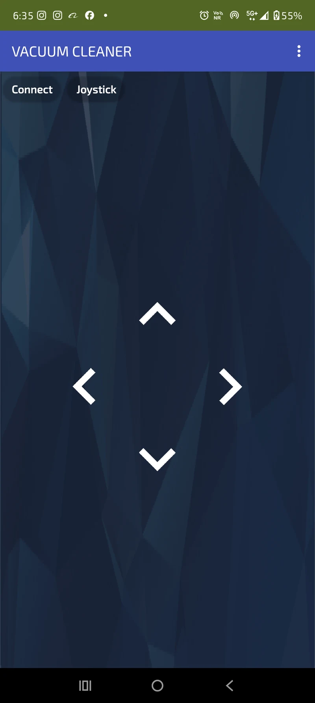

U12 · Personal build
Vacuum Cleaning Robot
An autonomous cleaner on a custom acrylic chassis — centrifugal suction, a PWM-controlled sweep brush, ultrasonic collision avoidance and an infrared cliff sensor.

The build
A cleaning robot on a chassis I cut from acrylic — dual DC motors through an H-bridge, a centrifugal fan for suction, and a PWM-controlled sweep brush pulling debris into the intake. Bluetooth starts and stops it, and a physical toggle arms the cleaning mechanism separately from the drive so you can move it without it running.
Not falling down the stairs
Collision avoidance is ultrasonic. Cliff detection — the part that stops it driving off a step — is an infrared sensor pointed at the floor, which is the cheap and reliable way to solve that.
Status streams over serial, which matters more than it sounds: watching the sensor values live is the only practical way to tune the thresholds for a particular floor.
Gallery




